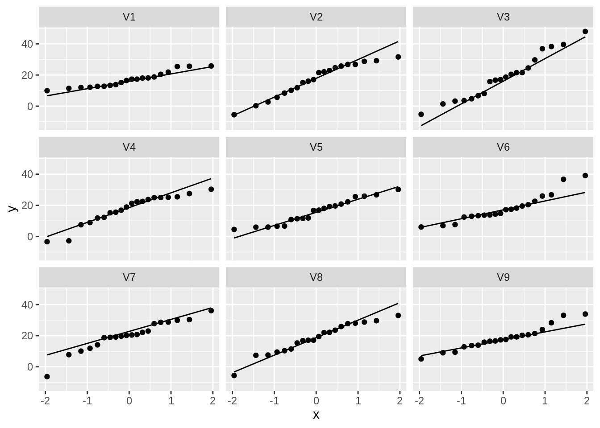
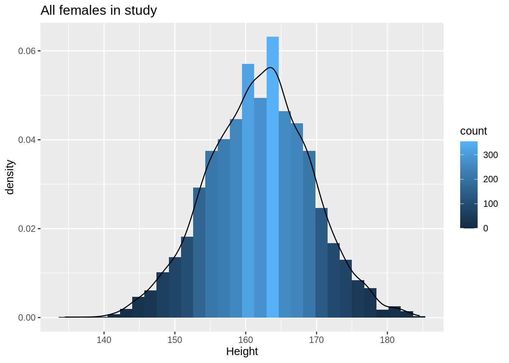
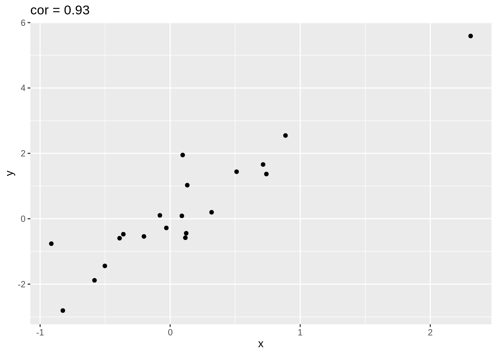
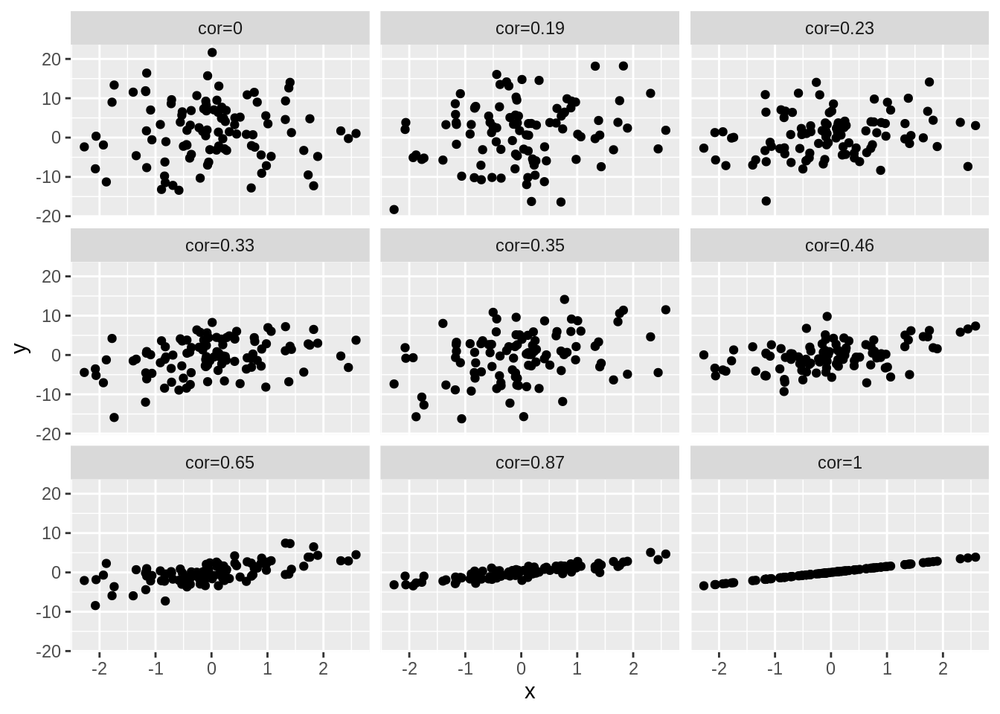

1 Why data exploration and descriptive statistics?
- Reporting on results: not useful to only report a table with the results for each subject.
- Letting the data speak by summarizing and visualizing it.
- Getting insight in the data.
- Discover errors, anomalies or even fraud.
- Check assumptions that are required for the downstream statistical inference, e.g. are the data Normally distributed.
2 Univariate exploration of quantitative variables
2.1 Histogram
NHANES %>% filter(Gender=="female") %>%
ggplot(aes(x=DirectChol)) +
geom_histogram(aes(y=..density.., fill=..count..),bins=30) +
geom_density(aes(y=..density..))
- Select females and pipe results to ggplot.
NHANES %>% filter(Gender=="female")- Select data to plot.
ggplot(aes(x=DirectChol)) +Equal bins for interpretation, the number of bins can be selected with the bins argument to the geom_hist.
Relative frequenties to enable visual comparison between histograms.
geom_histogram(aes(y=..density.., fill=..count..)) +- If we have enough observations we can use a kernel density estimator of f(x).
geom_density(aes(y=..density..))2.2 Boxplot
- A quantile, \(x_{a\%}\), is the value of the random variable that correspond to a certain probability \(F(x_{a\%})=P[X\leq x_{a\%}=a\%]\).

With ggplot we always have to define an x variable if we make a boxplot. If we use a string then all data is considered to originate from one category and one boxplot is constructed.
NHANES %>%
filter(Gender=="female") %>%
ggplot(aes(x="",y=DirectChol)) +
geom_boxplot()
So we can add a boxplot to a ggplot figure by using the geom_boxplot() function.
If the dataset is small to moderate in size we can also add the raw data to the plot with the geom_point() function and the position="jitter" argument. Note, that we then also set the outlier.shape argument in the geom_boxplot function on NA so that the outliers are not plotted twice.
Here, we will plot again the relative abundances of Staphylococcus from the armpit transplant experiment.
ap<-read_csv("https://raw.githubusercontent.com/GTPB/PSLS20/master/data/armpit.csv")
apap %>%
ggplot(aes(x=trt,y=rel)) +
geom_boxplot(outlier.shape=NA) +
geom_point(position="jitter")
When we specify a factor variable for x, we get a boxplot for each treatment group.
2.3 Descriptive statistics
2.3.1 Central location: Mean or Median?
2.3.1.1 Mean
- In a period of 30 years, males hope to have on average 64.3 partners and females 2.8 {(Miller and Fishkin, 1997)}.
2.3.1.2 Median
- The median of the number of partners males and females want to have is both 1 {(Miller and Fishkin, 1997)}
2.3.1.3 What happens?

- Mean is very sensitive towards outliers!
2.3.2 Geometric mean
\[\sqrt[n]{\prod\limits_{i=1}^n x_i} = \exp\left\{\frac{1}{n} \sum_{i=1}^n \log(x_i)\right\}\]
Geometric mean is closer to the median then the mean
log-transformation removes skewness
Often a more useful measure for the central location than median:
- Uses all observations: is more precise
- It is the ordinary mean on log-transformed data \(\rightarrow\) classical statistical methods can be directly applied, e.g. hypothesis tests and confidence intervals (see chapter 5)
- Useful for many biological characteristics e.g. concentrations that cannot be negative.
- Differences on a log scale have the interpretation of a log fold change:
\[\log (B) - \log(A)= \log(\frac{B}{A})=\log(FC_\text{B vs A})\]
In Genomics often the \(log_2\) transformation is used. A difference of 1 corresponds to a \(FC=2\).
logSummary <-
NHANES %>% filter(Gender=="female") %>% summarize(logMean=mean(DirectChol %>% log2,na.rm=TRUE),sd=sd(DirectChol %>% log2,na.rm=TRUE),mean=mean(DirectChol,na.rm=TRUE),median=median(DirectChol,na.rm=TRUE)) %>% mutate(geoMean=2^logMean)
NHANES %>% filter(Gender=="female") %>%
ggplot(aes(x=DirectChol %>% log2)) +
geom_histogram(aes(y=..density.., fill=..count..),bins=30) +
geom_density(aes(y=..density..)) +
stat_function(fun=dnorm,color="red",args=list(mean=logSummary$logMean, sd=logSummary$sd))
logSummary- Indeed the mean is pulled to larger values by the skewed data.
- The geometric mean is closer to the median.
- The cholesterol data are much more symmetric upon log transformation and the approximation by a Normal distribution is good.
2.4 Descriptive Statistics for Variability
The variability around the central value is crucial:
- Biologists are often interested in how animals or plants are spread in the study region.
- Compare groups: the group effect is more clear when the response has less variability. Quantifying variability is crucial to distinguish between systematic and random patterns.
The response varies between and within individuals and is the reason why we need statistics.
Crucial to describe both the central location and the variability.
Which part of the variability can we explain (e.g. with characteristics treatment, age, etc,) and which part is unexplained?
2.4.1 Sample variance and sample standard deviation
Sample variance: \[ s_X^2= \sum\limits_{i=1}^n \frac{(X-\bar X)^2}{n-1} \]
Interpretation is often difficult because it is in another unit than the measurements.
Standard deviation: \[ s_X= \sqrt{s_x^2} \]
Very useful for Normal distributed observations:
- 68% of the observations falls in the interval \(\bar{x} - s_x\) en \(\bar{x} + s_x\)
- 95% of the observations falls in the interval \(\bar{x} - 2 s_x\) en \(\bar{x} + 2 s_x\).
These intervals are referred to as 68% en 95% reference-intervals.
If the data are not Normally distributed, reference intervals are not valid.
2.4.2 Interquartile range
For skewed data the standard deviation is not useful
- It is very sensitive to outliers
- Inter Quartile Range: Distance between first and third quartile
- Width of the boxplot!
NHANES %>% filter(Gender=="female") %>% summarize(IQR=IQR(DirectChol,na.rm=TRUE))NHANES %>% filter(Gender=="female") %>%
ggplot(aes(x="",y=DirectChol)) +
geom_boxplot()
3 Normal approximation
Biological and chemical data are often Normally distributed upon transformation.
If this is the case we can get a lot of insight in the data using just two descriptive statistics: mean \(\mu\) and standard deviation \(\sigma\).
3.1 Evaluation with QQ-plots
If your analysis builds upon the assumption that the data are Normally distributed, it has to be verified.
We use QQ-plots or quantile-quantile plots.
Observed quantiles from the observations in the sample are plotted against quantiles from the Normal distribution.
If the data are Normally distributed both quantiles have to be in line.
Dots in the plot are expected on a straight line.
Systematic deviations of the straight line indicate that the data are not Normally distributed.
Note, that we will always observe some random deviations from the straight line in the plot because of random biological variability, which is not indicative for deviations from Normality.
So it is important to train yourself to learn to distinguish systematic from random deviations.
3.1.1 Normal data
We will first simulate data from the Normal distribution to show how the plots look like for data that is meeting the assumptions.
We will simulate data from 9 samples with a mean of 18 and standard deviation of 9.
n <- 20
mu <- 18
sigma <- 9
nSamp <-9
normSim <- matrix(rnorm(n*nSamp,mean=mu,sd=sigma),nrow=n) %>% as.data.frame
normSim %>% gather(samp,data) %>%
ggplot(aes(x=data)) +
geom_histogram(aes(y=..density.., fill=..count..),bins=30) +
geom_density(aes(y=..density..)) +
facet_wrap(~samp)
normSim %>% gather(samp,data) %>%
ggplot(aes(sample=data)) +
geom_qq() +
geom_qq_line() +
facet_wrap(~samp)
So even for Normal data we observe some deviations due to sampling variability!
3.1.2 Real data
NHANES %>% filter(Gender=="female"&!is.na(BMI)) %>%
ggplot(aes(x=BMI))+
geom_histogram(aes(y=..density.., fill=..count..)) +
xlab("BMI") +
ggtitle("All females in study") +
geom_density(aes(y=..density..))
NHANES %>% filter(Gender=="female"&!is.na(BMI)) %>%
ggplot(aes(sample=BMI)) +
geom_qq() +
geom_qq_line()
The QQ-plot shows that the quantiles of the data
- are larger (above the line) than these from the Normal in the left tail: compression of the lower tail,
- are larger (above the line) than these from the Normal in the right tail: long tail to the right.
We can clearly see that the data are right-skewed.
4 Two continuous variables: Correlation
- NHANES study
- Height and Weight Example for females
NHANES%>% filter(Age>25 & Gender=="female") %>%
ggplot(aes(x=Height,y=Weight)) +
geom_point()We observe an association between Weight and Height, but we also observe that the Weights tend to be right-skewed.
Lets look at the univariate distributions first.
NHANES%>% filter(Age>25 & Gender=="female") %>%
ggplot(aes(x=Height)) +
geom_histogram(aes(y=..density.., fill=..count..)) +
xlab("Height") +
ggtitle("All females in study") +
geom_density(aes(y=..density..))
NHANES%>% filter(Age>25 & Gender=="female") %>%
ggplot(aes(sample=Height)) +
geom_qq() +
geom_qq_line()
NHANES%>% filter(Age>25 & Gender=="female") %>%
ggplot(aes(x=Weight)) +
geom_histogram(aes(y=..density.., fill=..count..)) +
xlab("Weight") +
ggtitle("All females in study") +
geom_density(aes(y=..density..))NHANES%>% filter(Age>25 & Gender=="female") %>%
ggplot(aes(sample=Weight)) +
geom_qq() +
geom_qq_line()
The weights are indeed skewed!
Upon log transformaton the Weights are less skewed, but still not Normally distributed.
NHANES%>% filter(Age>25 & Gender=="female") %>%
ggplot(aes(x=Weight%>%log2)) +
geom_histogram(aes(y=..density.., fill=..count..)) +
xlab("Weight (log2)") +
ggtitle("All females in study") +
geom_density(aes(y=..density..))
NHANES%>% filter(Age>25 & Gender=="female") %>%
ggplot(aes(sample=Weight%>%log2)) +
geom_qq() +
geom_qq_line()
Skewness is still there but is reduced already.
NHANES%>% filter(Age>25 & Gender=="female") %>%
ggplot(aes(x=Height,y=Weight %>% log2)) +
ylab("Weight (log2)") +
geom_point()4.1 Covariance and Correlation
- Let X and Y be to continuous random variables, and for each subject i we observe \((X_i,Y_i)\).
- Covariance: how deviate X_i and Y_i around their means?
\[\mbox{Covar}(X,Y)=E[(X-E[X])(Y-E[Y])]\]
- Correlation: standardise the covariance according to the variability in each variable:
\[\mbox{Cor}(X,Y)=\frac{E[(X-E[X])(Y-E[Y])]}{\sqrt{E[(X-E[X])^2}\sqrt{E[(Y-E[Y])^2}}\]
4.2 Pearson Correlation
- Association between two continuous covariate:
\[\mbox{Cor}(X,Y)=\frac{\sum_{i=1}^{n}(X_{i}-\bar{X})(Y_{i}-\bar{Y})}{(n-1)s_{X}s_{Y}} \]
Positive correlation: \(x \ \nearrow \ \Rightarrow \ y \ \nearrow\)
Negative correlation: \(x \ \nearrow \ \Rightarrow \ y \ \searrow\)
Correlation always between -1 en 1
means<-NHANES%>% filter(Age>25 & Gender=="female") %>% select(Weight,Height) %>% mutate(log2Weight=Weight%>%log2) %>% apply(.,2,mean,na.rm=TRUE)
ranges<-NHANES%>% filter(Age>25 & Gender=="female") %>% select(Weight,Height) %>% mutate(log2Weight=Weight%>%log2) %>% apply(.,2,range,na.rm=TRUE)
NHANES%>% filter(Age>25 & Gender=="female") %>%
ggplot(aes(x=Height,y=Weight %>% log2)) +
ylab("Weight (log2)") +
geom_point() +
geom_hline(yintercept=means["log2Weight"],color="red") +
geom_vline(xintercept=means["Height"],color="red") +
annotate(geom="text",
x=c(ranges[1,"Height"],ranges[1,"Height"],ranges[2,"Height"],ranges[2,"Height"]),
y=c(ranges[1,"log2Weight"],ranges[2,"log2Weight"],ranges[1,"log2Weight"],ranges[2,"log2Weight"]),
label=c("+","-","-","+"),color="red",size=10)
NHANES%>%
filter(Age>25 & Gender=="female") %>%
ggplot(aes(x=Height,y=Weight)) +
ylab("Weight (log2)") +
geom_point() +
geom_hline(yintercept=means["Weight"],color="red") +
geom_vline(xintercept=means["Height"],color="red") +
annotate(geom="text",
x=c(ranges[1,"Height"],ranges[1,"Height"],ranges[2,"Height"],ranges[2,"Height"]),
y=c(ranges[1,"Weight"],ranges[2,"Weight"],ranges[1,"Weight"],ranges[2,"Weight"]),
label=c("+","-","-","+"),color="red",size=10)NHANES%>%
filter(Age>25 & Gender=="female") %>%
select(Weight,Height) %>%
mutate(log2Weight=Weight%>%log2) %>%
na.exclude %>%
cor Weight Height log2Weight
Weight 1.0000000 0.3029834 0.9812646
Height 0.3029834 1.0000000 0.3240824
log2Weight 0.9812646 0.3240824 1.0000000- Note, that the correlation is lower when the data are not transformed.
- The Pearson correlation is sensitive to outliers!
- Do not use Pearson correlation for skewed distributions or for data with outliers.
4.2.1 Impact of outliers
Illustration with simulated data that has one outlier.
set.seed(100)
x <- rnorm(20)
simData <- data.frame(x=x,y=x*2 + rnorm(length(x)))
simData %>% ggplot(aes(x=x,y=y)) +
geom_point() +
ggtitle(paste("cor =",cor(simData[,1],simData[,2]) %>% round(.,2)))
outlier<- rbind(simData,c(2,-4))
outlier %>% ggplot(aes(x=x,y=y)) +
geom_point() +
ggtitle(paste("cor =",cor(outlier[,1],outlier[,2]) %>% round(.,2)))4.2.2 Only linear association
Note, that the Pearson correlation only captures linear association!
x <- rnorm(100)
quadratic <- data.frame(x=x,y=x^2 + rnorm(length(x)))
quadratic %>% ggplot(aes(x=x,y=y)) +
geom_point() +
ggtitle(paste("cor =",cor(quadratic[,1],quadratic[,2]) %>% round(.,2))) +
geom_hline(yintercept = mean(quadratic[,2]),col="red") +
geom_vline(xintercept = mean(quadratic[,1]),col="red")
4.3 Different magnitudes of correlation
set.seed(100)
x <- rnorm(100)
simData2<-cbind(x,1.5*x,sapply(1:7,function(sd,x) 1.5*x+rnorm(length(x),sd=sd),x=x),rnorm(length(x),sd=7))
colnames(simData2)[-1]<-paste("cor",round(cor(simData2)[1,-1],2),sep="=")
simData2 %>%
as.data.frame %>%
gather(cor,y,-x) %>%
ggplot(aes(x=x,y=y)) +
geom_point() +
facet_wrap(~cor)
simData3 <- simData2
simData3[,-1]<--simData2[,-1]
colnames(simData3)[-1]<-paste("cor",round(cor(simData3)[1,-1],2),sep="=")
simData3 %>%
as.data.frame %>%
gather(cor,y,-x) %>%
ggplot(aes(x=x,y=y)) +
geom_point() +
facet_wrap(~cor)4.4 Spearman correlation
The Spearman correlation is the Pearson correlation after transforming the data to ranks.
- Pearson correlation
cor(outlier) x y
x 1.0000000 0.4682823
y 0.4682823 1.0000000- Spearman correlation
cor(outlier,method="spearman") x y
x 1.0000000 0.6571429
y 0.6571429 1.0000000Spearman correlation is less sensitive to outliers.
Pearson correlation on ranks
rankData<-apply(outlier,2,rank)
cor(rankData) x y
x 1.0000000 0.6571429
y 0.6571429 1.0000000- NHANES example
NHANES%>%
filter(Age>25 & Gender=="female") %>%
select(Weight,Height) %>%
mutate(log2Weight=Weight%>%log2) %>%
na.exclude %>%
cor(method="spearman") Weight Height log2Weight
Weight 1.0000000 0.3039481 1.0000000
Height 0.3039481 1.0000000 0.3039481
log2Weight 1.0000000 0.3039481 1.0000000